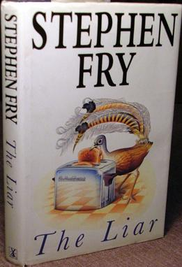
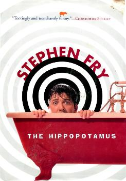
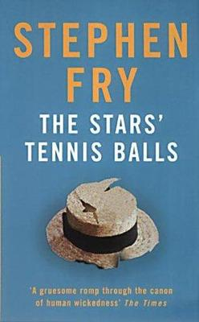
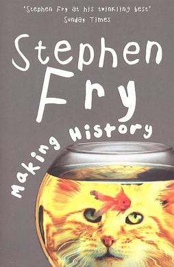

Stephen Fry

The world was blessed with the birth of Stephen Fry on the 24th August, 1957 in Hampstead, England. The son of a brilliant engineer and educated in the traditional English boarding school system, Stephen had a very tumultuous youth coming to grips with his sexuality and mental health struggles.
Since becoming an international treasure in the 1980's with his best friend Hugh Laurie, Stephen has become a man of many roles, being everything from a radio/television host, playwright, newspaper columnist and a writer with an absolute love for the English language and the written word.
As a result of his life-long struggle with bi-polar disorder, his writing style is an ecclectic mix of both the comedic and daft as well as the dark and disturbing, but one consistancy throughout all of his work is the eloquence of his prose.
The list of Stephen's literary influences is near-endless, including the likes of P.G. Wodehouse and Oscar Wilde as the biggest among them.
The Liar

The debut novel of Stephen Fry is a non-chronological story of the life of Adrian Healey as he goes through his education and academic career. However, Adrian is far from the most reliable of people and has never had a particularly close relationship to the truth of reality, preferring a more exciting world of his own creation.
The Hippopotamus

An alcohol-soaked and long washed-up writer and poet by the name of Ted Wallace serves as the protagonist and the eponymous metaphorical hippopotamus.
The Hippopotamus follows Ted as he deals with having his life collapse around him after losing his work and journeying to the country mansion of his old friend to investigate reports of seemingly miraculous healings occuring at the mansion.
The Stars' Tennis Balls

Also simply known as Revenge in the United States, this novel is a modern re-interpretation of the classic tale of The Count of Monte Cristo. It follows the rise, fall and later revenge of the protagonist Ned Maddenstone as he seeks to gain retribution for a long past injustice done against him.
Making History

Imagine an alternate history where Adolf Hitler never existed, it would be an idyllic paradise where the horros of World War II never occured, right? Wrong.
Making History explores the possible consequences of history being changed to remove the influence of the undeniably evil Adolf Hitler, instead of it being a change for the better, the protagonist Michael Young, discovers that while Hitler himself was pure evil, there were others far worse who would fill in for him in his absence.